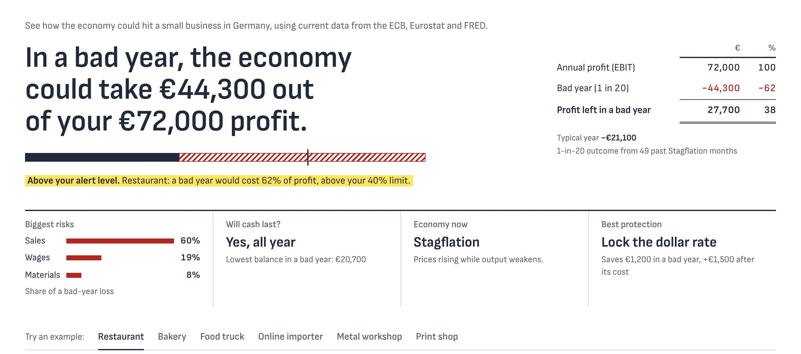
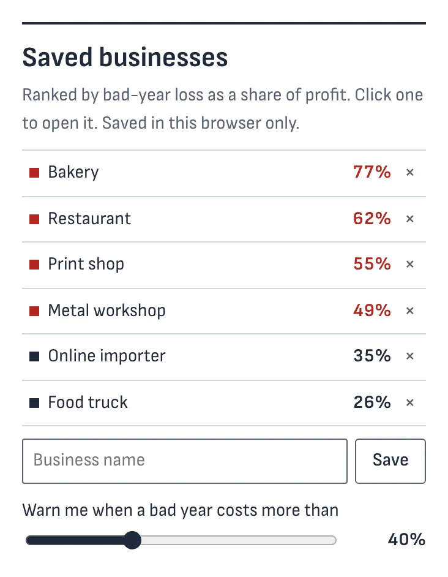
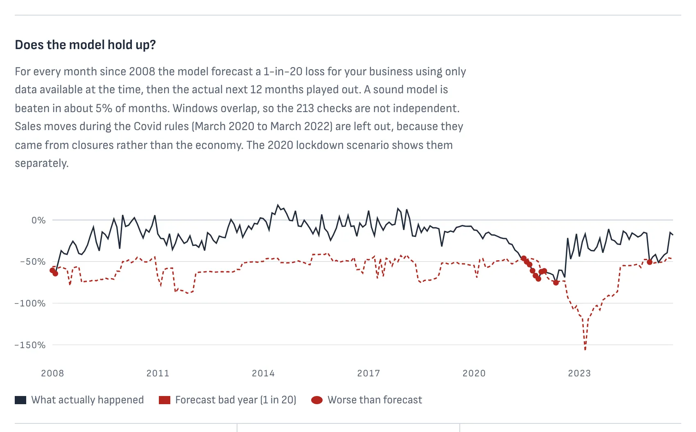

Which of your clients can't take a bad year?
Macro Risk Monitor reads a client's DATEV trial balance and shows how much of next year's profit energy prices, interest rates, purchase prices and weaker sales could take. For tax advisors and banks: every client ranked, with fresh data twice a month.
| € | % | |
|---|---|---|
| Annual profit (EBIT) | 72,000 | 100 |
| Bad year (1 in 20) | −44,300 | −62 |
| Profit left in a bad year | 27,700 | 38 |
- Bakery77%
- Restaurant62%
- Print shop55%
- Metal workshop49%
- Online importer35%
- Food truck26%
Where next year's risk comes from
An energy contract runs out, a floating-rate loan resets, an index-linked rent adjusts, the minimum wage rises. The accounts show last year; the risk sits in the next twelve months.
- The economy now
- StagflationSince May 2026
- Euribor 3M
- 2.64%What floating-rate loans follow
- Energy prices
- +13.4%On a year ago
- Minimum wage
- €14.60From January 2027, up from €13.90
Data through September 2026, from the ECB, Eurostat and FRED.
How it works
Fifteen minutes with a client file, from the export to the conversation.
Import
Export the Summen- und Saldenliste from DATEV (SKR03 or SKR04) and drop it in. The file never leaves the browser.
Read
The bad-year loss, the biggest risks, whether cash lasts the year, and when each contract starts to bite.
Act
Compare protection (fix the loan, fix energy, pass on price rises, lock the dollar), print a PDF for the client or the bank, and get an email when the economy changes phase.

Built for an advisor's desk
Everything the Business plan adds to the free check.

- All clients, ranked by riskOne list, sorted by the share of profit a bad year could take, with your alert level marked.
- Since your last visitWhen new data arrives, see who crossed your alert level and whose risk rose.
- A monthly alert emailThe economy's phase, the key rates and how typical businesses moved, in German and English.
- An AI assistantExplains results, runs what-ifs on the model and drafts client notes. Client names never leave the browser.
- A PDF reportTwo pages for the client meeting or the bank's credit file.
- 13 languagesFor clients who would rather read Turkish, Polish, Arabic or Ukrainian.
- Portfolio stress testFor treasury and fund holdings: yield, duration and five stress scenarios.
- No installationRuns in the browser. No account, no cookies, no tracking.
Can you trust the number?
The model is tested against history, month by month, using only the data that was public at the time.
- Months worse than forecast
- 5.6%Example restaurant since 2008, target 5%
- Kupiec test
- Passesp = 0.68
- Data series
- 21ECB, Eurostat and FRED, each shifted by its publication lag
- Cookies and trackers
- 0Client figures stay in the browser

The method, the backtest and the limits are written up in the README on GitHub.
Prices
Planned prices. While we run pilots, every plan is free to try.
Free
For owners who want a quick check
- Bad-year risk for one business
- The biggest risks, ranked
- Whether cash lasts the year
- The 2022 energy shock replayed
Pro
For owners who want a plan
- Cash month by month
- All five stress scenarios
- Which protection pays off
- DATEV import and PDF report
Business
For tax advisors and banks
- All clients ranked by risk
- Alerts and the monthly email
- The AI assistant
- Per office, up to 50 clients
Run a free pilot with us
We are looking for three tax offices or banks for a pilot this winter: one session with a real client file, then we fix whatever got in the way.
Who builds it
Students of Applied Data Science and Business Analytics at ISM Munich.
EidenData and engineering: the pipeline, the models, the web app
ChannappaFinance: the exposure model, the hedging logic, prices and client interviews
Questions
Is client data safe?
Client figures are processed in the browser and stored nowhere else. The AI assistant receives codes instead of client names, and the alert email knows only the subscriber's address.
Where does the data come from?
Euribor, inflation and exchange rates from the ECB; industrial production, retail sales and producer prices from Eurostat; oil and US rates from FRED. Refreshed on the 3rd and the 18th of each month.
What does “bad year” mean?
The 1-in-20 outcome for next year's profit: what the business would have lost if the next twelve months moved like past months in the same phase of the economy, scaled to today's volatility.
Which accounts can it import?
A Summen- und Saldenliste exported as CSV from DATEV, with the SKR03 or SKR04 chart of accounts.
Is this financial advice?
No. It is a prototype that shows exposures and what protection would cost, for a conversation between the advisor and the client.